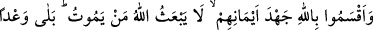
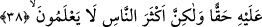
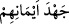

Ebû’l-Kâsım der ki: “Âhireti, cömertlik ve başkalarını kendine tercih ederek vererek
(îsar) aramayın. Muhâlefeti terk ve yasaklardan tamâmen el çekmekle taleb edin.”
Bu, zamanımız insanının bulunduğu durumun tam aksidir. Çünkü zamâne âbidleri,
muhâlif amellere batmış oldukları halde yapabildikleri bütün tâatları yapmaktadırlar.
Çünkü terk edilmesi gerekli şeyleri önemsemezler. Halbuki onlar sâdece farz ve
vâcibleri yerine getirip rezillikleri ve muhâlif davranışlardan geri dursalar kendileri
için daha hayırlı olurdu.
Mesnevî’de der ki:
Bunun için ashabdan bazıları Resûl-i Ekrem (s.a.)’den
Azgın ve hîlekâr nefsin hîlesini sorarlar;
“Nefis, gizli garezlerden ne karıştırır,
İbâdetlere ve candan gelen ihlâsa?” derlerdi.
İbâdetin faziletini ve sevabını arayıp sormazlar;
“Apaçık ayıp hangisidir?”diye kötü huyları sorarlardı.
Kıldan kıla, zerreden zerreye nefis hîlesini,
Tanır, bilirlerdi, gülü kerevizden fark edercesine.
Allah Teâlâ’dan bizi hakka’l-yakîne erdirmesini, “Onların yardımcıları da yoktur.”
buyurduğu kimselerin amellerinden korumasını niyaz ederiz.
38. Onlar: “Allah ölen bir kimseyi diriltmez” diye olanca güçleriyle Allah’a and
içtiler. Aksine, bu O’nun bizzat kendisine karşı gerçek bir vaadidir. Fakat
insanların çoğu bilmez.
Ebû’l-Âliye’den rivâyet edilir ki müslümanlardan bir adamın müşriklerden bir adam
üzerinde alacağı vardı. Borcunu almak için adamın yanına vardı. Ona söylediği sözler
arasında şu da vardı. “Ölümden sonra (beni dirilteceğini) ümid ettiğim zâta yemin
ederim ki alacağım şu kadardır.” Müşrik: “Sen öldükten sonra diriltileceğine mi
inanıyorsun?” dedi. Müslüman: “Evet” dedi. Müşrik, ‘Hiç kimse öldükten sonra diri
olmaz’ diye kendilerince kesin sağlam ve şiddetli bir yemin etti. İşte bunun üzerine
Allah Teâlâ şu âyeti indirdi:
“Onlar: “Allah ölen bir kimseyi diriltmez” diye olanca güçleriyle Allah’a and
içtiler.” Yâni sağlam ve kesin yemin etmekte cehd ve gayret ettiler.
el-Kamus’ta der ki: “
”in mânâsı, yeminde mübâlağa edip gayret sarf ettiler,